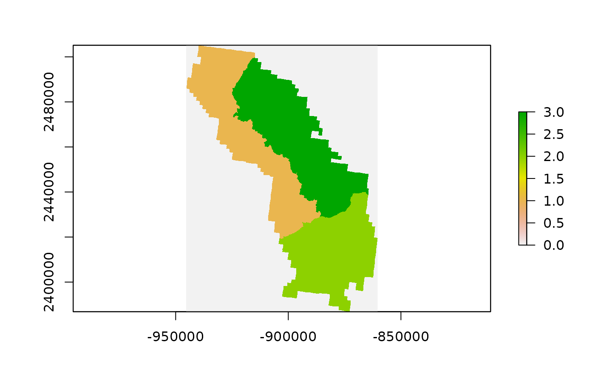

spPoly2Rast.RdConverts SpatialPolygons layer to raster.
spPoly2Rast(
polyv,
polyv_dsn = NULL,
polyv.att,
polyv.lut = NULL,
rastfn.template = NULL,
NODATA = NULL,
outfolder = NULL,
outfn = "polyrast",
outext = "img",
outfn.pre = NULL,
outfn.date = TRUE,
overwrite = FALSE
)sf R object or String. Polygon data to convert to raster. Can be a spatial polygon object, full pathname to a shapefile, or name of a layer within a database.
String. Data source name (dsn; e.g., sqlite or shapefile pathname) of layer to convert. The dsn varies by driver. See gdal OGR vector formats (https://www.gdal.org/ogr_formats.html). Optional if polyv is sf object.
String. Name of attribute in polyv to rasterize.
Data frame. Look up table of codes, if polyv.att is character or want to group codes.
String. Full path name of raster to use as template for new raster.
Number. The NODATA value for background values. If NODATA is NULL, and a NODATA value is defined on the rastfn.template raster, the default is the defined NODATA value, else it is defined based on its datatype (see DEFAULT_NODATA for default data values).
String. If exportshp=TRUE, name of output folder. If NULL, the working directory is used.
String. Name of output raster. If NULL, default is 'polyrast'.
String. Name of raster extension (fmt).
String. Add a prefix to output name (e.g., "01").
Logical. If TRUE, add date to end of outfile (e.g., outfn_'date'.csv).
Logical. If TRUE and exportshp=TRUE, overwrite files in outfolder.
A list containing raster and raster information derived from the original polygon.
On-the-fly projection conversion
The spTransform (rgdal) method is used
for on-the-fly map projection conversion and datum transformation using
PROJ.4 arguments. Datum transformation only occurs if the +datum tag is
present in the both the from and to PROJ.4 strings. The +towgs84 tag is used
when no datum transformation is needed. PROJ.4 transformations assume NAD83
and WGS84 are identical unless other transformation parameters are
specified. Be aware, providing inaccurate or incomplete CRS information may
lead to erroneous data shifts when reprojecting. See spTransform help
documentation for more details.
If exportshp=TRUE:
The writeOGR (rgdal) function is called. The ArcGIS
driver truncates variable names to 10 characters or less. Variable names are
changed before export using an internal function (trunc10shp). If Spatial
object has more than 1 record, it will be returned but not exported.
# \donttest{
# Get polygon vector layer from FIESTA external data
WYbhdistfn <- system.file("extdata",
"sp_data/WYbighorn_districtbnd.shp",
package = "FIESTA")
# Turn polygon into raster
# Note: raster values must be numeric, therefore names were changed to
# numeric codes based on lookup table produced from the following code.
new_rast <- spPoly2Rast(polyv = WYbhdistfn,
polyv.att = "DISTRICTNA",
outfolder = tempdir())
#> creating lookup table of codes
#> Warning: NOT UPDATED FOR PROJ >= 6
#> ================================================================================
# Plot result with raster package
raster::plot(raster::raster(new_rast$rastfn))

# }